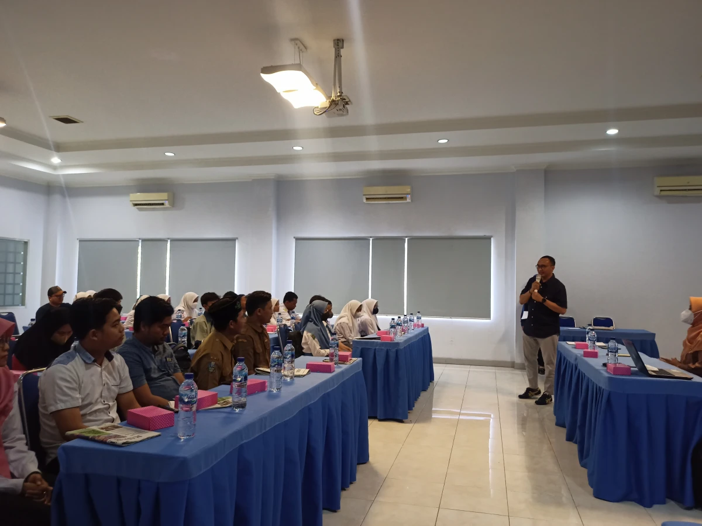
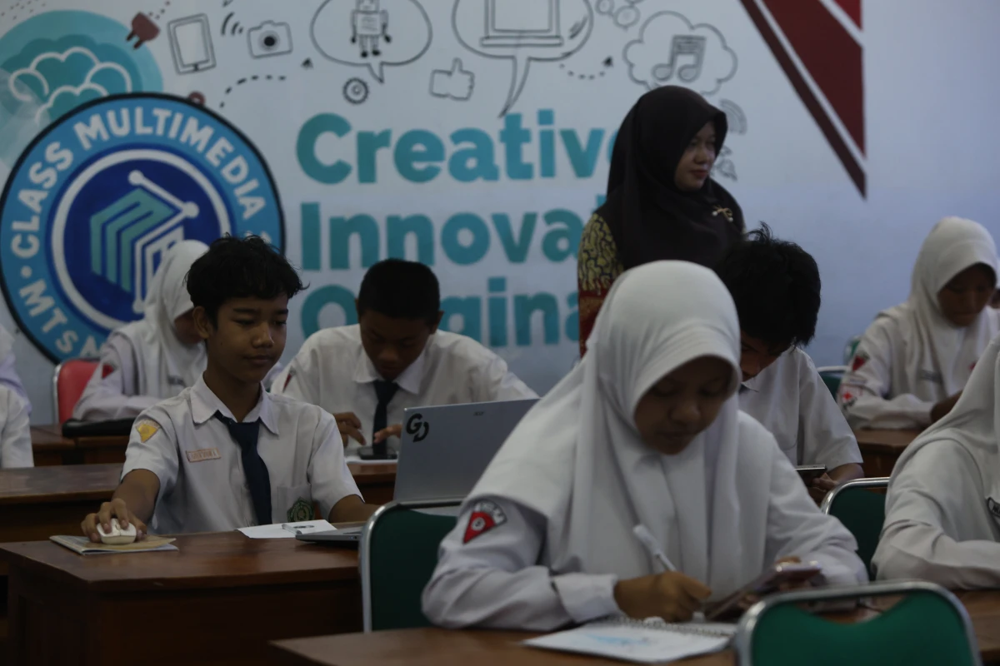

Pelatihan Website, Coding & AI
Pelatihan pembuatan website, pemrograman dasar, dan pengenalan Artificial Intelligence (AI) untuk siswa SMP hingga SMA — membekali generasi muda dengan keterampilan digital sejak dini.

Pelatihan Website, Coding & AI untuk Generasi Z
Di era transformasi digital yang melaju pesat, pemahaman mengenai teknologi bukan lagi sekadar pilihan, melainkan keterampilan esensial. Program Pelatihan Website, Coding & AI dirancang khusus oleh Radar Kediri Institute untuk siswa tingkat SMP/MTs hingga SMA/SMK/MA guna membekali mereka dengan fondasi teknologi yang solid sebagai persiapan memasuki dunia perkuliahan dan industri kreatif.
Dalam pelatihan ini, siswa tidak hanya belajar teori, tetapi langsung mempraktikkan cara membangun sebuah website fungsional dari nol (menggunakan CMS maupun HTML dasar), memahami alur logika pemrograman (coding), hingga mengeksplorasi potensi Artificial Intelligence (AI). Kami mengajarkan cara memanfaatkan AI secara positif dan etis—seperti menggunakan AI untuk riset, mempermudah penyusunan desain, hingga optimasi belajar.
Bagi institusi sekolah, program ini merupakan langkah strategis untuk memperkuat kurikulum informatika dan meningkatkan nilai jual sekolah (branding). Siswa yang memiliki portofolio digital pribadi berupa website karya sendiri akan memiliki keunggulan kompetitif, dan pihak sekolah akan dikenal sebagai lembaga yang progresif serta melek teknologi.
Output & Manfaat Pelatihan
- Setiap peserta mampu membuat, mendesain, dan meluncurkan website fungsional
- Memahami logika dasar pemrograman (algoritma, struktur data) dengan pendekatan praktis
- Menguasai penggunaan Generative AI (seperti ChatGPT/Copilot) untuk riset dan produktivitas
- Meningkatkan kemampuan problem-solving dan logika berpikir sistematis (Computational Thinking)
- Menghasilkan portofolio digital yang berguna untuk SNMPTN/SNBP atau masuk dunia kerja (SMK)
- Mendukung sekolah dalam menghadirkan pembelajaran informatika yang modern dan relevan
Materi & Susunan Kegiatan (Contoh Workshop 1 Hari - Intensif)
Literasi Digital & Masa Depan AI
Pengenalan tren teknologi masa depan, apa itu AI, dan etika penggunaannya bagi pelajar
Web Development 101
Praktik membangun struktur website (CMS/Website Builder/HTML Dasar) dan konsep hosting-domain
Snack Break
Istirahat sejenak
Dasar Pemrograman (Coding)
Memahami logika dan struktur kode melalui bahasa pemrograman dasar (seperti Python dasar atau JS)
Ishoma
Istirahat, sholat, dan makan siang
Sinergi Website & AI (Mini Project)
Siswa menyempurnakan website mereka dibantu dengan konten dan desain hasil prompting AI
Showcase Portofolio & Evaluasi
Presentasi hasil karya website siswa, evaluasi trainer, dan penutupan acara
Event Gallery
Dokumentasi program pelatihan digital — membekali siswa SMP dan SMA dengan logika pemrograman dan penguasaan AI secara interaktif.

{kind=link}
{kind=link}
Tim Fasilitator IT

Trainer IT & Digital
Radar Kediri Institute
Info teknis lab dan silabus, hubungi:
officialrkinstitute@gmail.com
+62 831-9800-2246
Fasilitas & Tempat Pelatihan
Pelatihan bersifat 100% praktikum sehingga membutuhkan akses perangkat komputer dan jaringan internet yang memadai.
Laboratorium Komputer / In-House Training

Kegiatan ini paling ideal diselenggarakan di Laboratorium Komputer sekolah atau aula, dengan rasio 1 komputer/laptop per siswa. Tim IT Radar Kediri Institute akan menyiapkan silabus, panduan instalasi (jika diperlukan), dan platform pembelajaran yang siap pakai sebelum hari H pelaksanaan.
Kebutuhan Teknis
- PC/Laptop dengan OS Windows, Mac, atau Linux
- Koneksi Internet stabil untuk akses AI dan CMS Web
- Proyektor dan layar LCD untuk instruktur
- Modul digital praktis (Disediakan RK Institute)
- Trainer IT praktisi dan pendamping (asisten lab)
- E-Certificate untuk seluruh peserta
Pertanyaan Sering Diajukan
Jawaban atas beberapa pertanyaan umum terkait program Pelatihan Website, Coding & AI untuk tingkat SMP dan SMA.